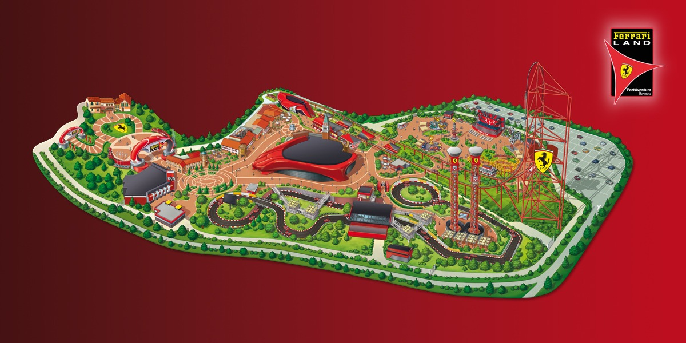
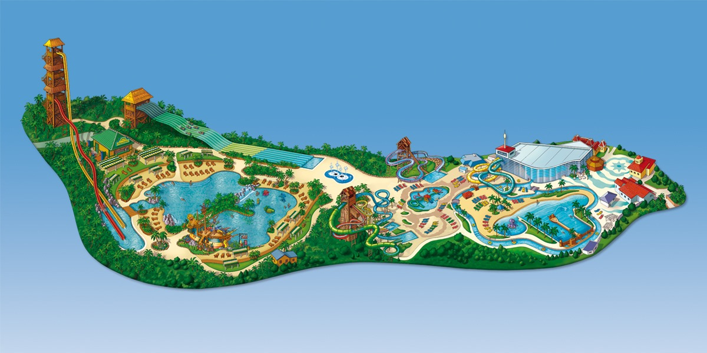

PortAventura Park
Sumérgete en la magia de PortAventura, donde las emocionantes montañas rusas y las increíbles atracciones temáticas te llevarán a un viaje inolvidable. Con áreas dedicadas a la cultura mediterránea, China, México y más, la aventura está garantizada para toda la familia.
Personas en el parque: 1500/51400
Ferrari Land
Vive la velocidad y la adrenalina en Ferrari Land, un parque dedicado a la icónica marca de coches. Disfruta de la montaña rusa más alta de Europa y siente la emoción de estar en una pista de carreras al estilo Ferrari.
Personas en el parque: 1500/11435
Caribe Aquatic Park
Refresca tu día en el Caribe Aquatic Park, un paraíso tropical con una amplia variedad de piscinas, toboganes y áreas de descanso. Con un ambiente relajado y exótico, es el lugar ideal para disfrutar de un día de sol y diversión en familia.
Personas en el parque: 1500/6500